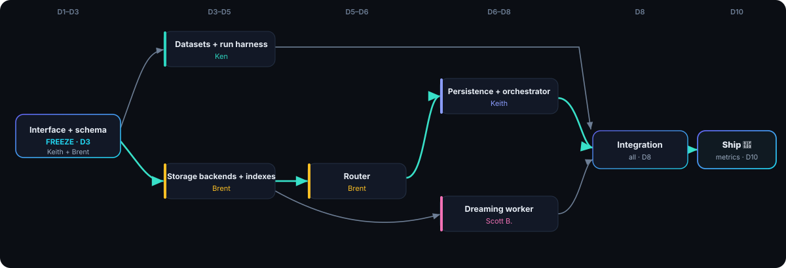

Codename: Cookbook Memory. The problem, the technical approach, the scope, who owns what, and a ten-day timeline — four parallel workstreams locked behind a shared interface, converging on a single end-to-end run.
There is no standard, model-agnostic layer that decides what to remember, where to store it, how to retrieve it fast, and how to keep it consistent over time for long-running agents.
signal vs. noise
the right store
no context flood
dedup, no conflicts
A pluggable four-module memory harness over three indexed storage backends, wired into OpenCode and measured on existing public benchmarks — no home-grown evals.
Decides what/when/where to save; tags every item.
Routes each query to the single best backend.
Ranks by recency × relevancy, dedups, returns.
While agents sleep: dedup, conflict resolution, governance.
Integrated into OpenCode. Per benchmark, a controlled grid runs Haiku + harness vs. Haiku, Opus 4.8 and Sonnet — prompts and task order fixed, every trajectory logged.
What the sprint commits to — and what it doesn't.
Week 1 = days 1–5 (build against frozen contracts; cheap no-memory baselines start ~D4). Week 2 = days 6–10 (wire together, run the Haiku+harness treatment on sharded keys, ship).
Critical path — the contracts everyone builds against.
Week 1Shared runner, metrics, dashboard — and captains one benchmark.
Week 1run(benchmark, model, memory) → metrics.Three fast backends + the dispatch layer.
Week 1The offline engine that keeps memory clean.
Week 1Every deliverable has one accountable owner. The interface is frozen on Day 3 so the four streams never block on each other.
P1 Keith · P2 Ken · P3 Brent · P4 Scott B.
| Area / deliverable | Owner | Supporting |
|---|---|---|
| Storage interface & memory-item schema | P1 | P3 |
| Persistence layer (write path, tagging, versioning) | P1 | — |
| Retrieval orchestrator (rank · dedup · return) | P1 | P3 |
| OpenCode integration (write/read each step) | P1 | — |
| Three storage backends + per-backend indexes | P3 | P1 |
| Intelligent router (rules → learned) | P3 | P1 |
| Backend performance testing | P3 | P2 |
| Dreaming worker (dedup · conflict · governance · retention) | P4 | P1, P3 |
| Memory semantics ("what is good memory") | P4 | P2 |
| Datasets, loaders & trajectory logging | P2 | P4 |
| Metric defs, shared run harness & cost gates | P2 | P4 |
| Results + cost dashboard, stats, aggregation | P2 | — |
| Run SWE-Bench-CL eval (own key) | P1 | — |
| Run LongMemEval eval (own key) | P2 | — |
| Run SWE-ContextBench eval (own key) | P3 | — |
| Run MemoryAgentBench eval (own key) | P4 | — |
| Run ContextBench eval (own key) | P3 | — |
| Final end-to-end integration | All | — |
~20 runs (5 benchmarks × 4 configs) is too much cost and time for one person on one key. Each teammate captains the benchmark(s) that stress their own component, on their own API budget — runs go wide, not deep.
| Benchmark | Captain | Why them | Configs |
|---|---|---|---|
| SWE-Bench-CL | Keith | Drives the coding agent end-to-end — his OpenCode wheelhouse. | 4 |
| LongMemEval | Ken | Eval lead; recency / temporal reasoning. | 4 |
| SWE-ContextBench | Brent | Context reuse exercises his retrieval + router. | 4 |
| MemoryAgentBench | Scott B. | Tests conflict resolution — his dreaming component. | 4 |
| ContextBench | Brent | Retrieval-quality (gold contexts) — same retrieval/router he owns. | 4 |
Whoever can best debug a bad number is the one watching it. Ken owns the shared runner and aggregates results.
Each captain runs on a separate API key/account — roughly 4× the aggregate rate limit, isolated per-benchmark budgets, no single-key throttle.
Order configs Haiku+mem → Haiku → Sonnet → Opus. Opus (priciest) runs last, only to confirm a signal — skip it if the cheaper tier already settles the question.
Iterate on a fixed ~10–15% stratified subset, then one full run per config. Use LongMemEval_S (~115k) to iterate; reserve _M (~1.5M) for a single final confirmation.
Content-hash every (task, model, config) call and checkpoint per task, so a crash or re-run never re-pays — critical on long SWE-bench trajectories.
Per-benchmark $ and token ceiling in the runner; abort and log partial results on overrun — no silent cost blow-ups.
No-memory baselines need only the model + dataset, not the harness — start them ~D4 to flatten the week-2 spike and surface API/dataset issues early.
Must-run cells: Haiku + harness (treatment) and Opus 4.8 (target). Haiku no-memory is cheap and stays; Sonnet is optional if budget is tight.
What blocks what across the two weeks. The Day-3 interface freeze unblocks every stream; the bold chain is the critical path to ship.

The hardest risk is semantic, not structural: what counts as "good memory." Ken and Scott B. must align on memory semantics in week 1, or the harness will store everything and retrieve nothing useful.
See how the modules connect, how the router decides, and how indexing keeps retrieval fast.
View architecture →